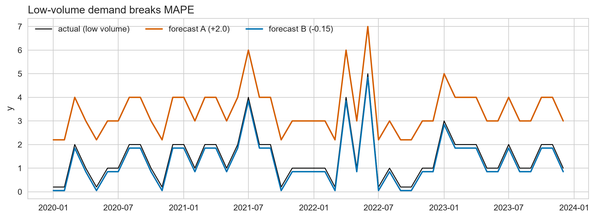
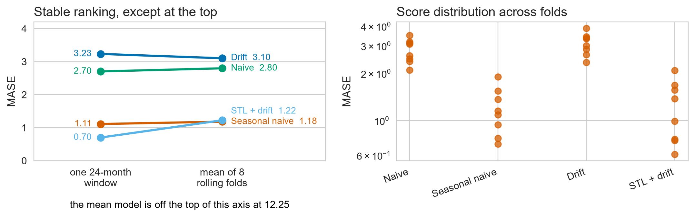
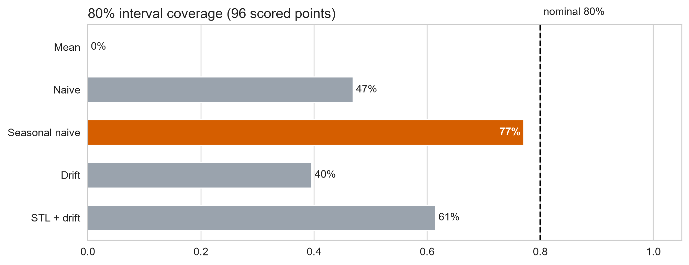
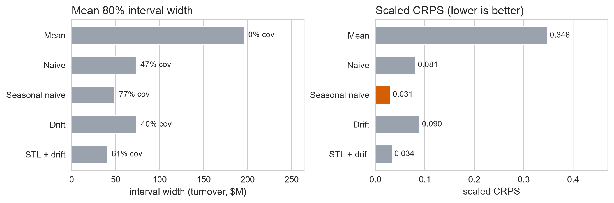

Forecast Evaluation & Cross-Validation
Day 2 · Lecture 2 · fpppy Ch 5.8–5.10, Ch 13
2026-08-26
You have 5 forecasts. Which is best?
- Part A: How to score point forecasts fairly
- Part B: Why 1 test split is not enough, and how rolling-origin CV fixes it
The deliverable is a reusable evaluation harness
A standard way to score any forecasting model, built and used today.
A. Scoring a point forecast
Ch 5.8 · Point forecast metrics
Only a scaled metric can compare across series
Forecast error: \(e_{T+h} = y_{T+h} - \hat{y}_{T+h|T}\)
| Metric | Property | Limitation |
|---|---|---|
| MAE | Easy to interpret | Scale-dependent: cannot be pooled across series |
| RMSE | Punishes large errors | Scale-dependent |
| MAPE | Unit-free | Explodes near zero, and asymmetric |
| MASE | Scaled: MAE over the benchmark’s | Needs the seasonal period |
| RMSSE | Scaled: RMSE over the benchmark’s | Same, and still punishes outliers |
Rescaling the data moves MAE but not MASE
Same series, new unit, with \(k > 0\): \(y'_t = k\,y_t\) and \(\hat{y}'_t = k\,\hat{y}_t\).
\[\text{MAE}' = \frac{1}{n}\sum \lvert k y_t - k\hat{y}_t \rvert = k\,\text{MAE} \quad\text{(moves with the unit)}\]
\[PE'_t = \frac{k y_t - k\hat{y}_t}{k y_t} = PE_t \qquad \text{MASE}' = \frac{k\,\text{MAE}}{k\,Q} = \text{MASE}\]
Now shift as well as scale, \(y'_t = k y_t + c\), which is what °C to °F is. Differences kill \(c\), so MASE holds. MAPE’s denominator keeps it.
MAPE cancelled \(k\) and is still the worst metric in this deck. Cancelling is necessary, not sufficient.
MAPE explodes when the actual is near zero
# Dataset: simulated low-volume / intermittent demand (Poisson counts near zero)
low = D.low_volume_demand(n=48, seed=3)
preds = low[["ds"]].assign(A=low["y"] + 2.0, # always 2 units too high
B=low["y"] - 0.15) # always 0.15 too low
P.forecast_overlay(low, preds, ["A", "B"], history_tail=None,
history_label="actual (low volume)")- Forecast A: MAE = 2.00, MAPE = 304%
- Forecast B: MAE = 0.15, MAPE = 23%
Three reasons MAPE cannot select a model
- Undefined at zero: explodes on intermittent / low-volume demand
- Asymmetric: penalizes over-forecasting far more than under-forecasting
- Fails without a true zero: the offset never cancels, so °C breaks it
Report MAPE to executives if required, but never optimize models using MAPE.
Dividing by the benchmark makes errors comparable
Error divided by the in-sample Seasonal Naive error (\(Q\)):
\[\text{MASE} = \frac{\text{MAE}}{Q}, \qquad Q = \frac{1}{T-m}\sum_{t=m+1}^{T} \lvert y_t - y_{t-m} \rvert\]
\(Q\) is measured in the units of the data, which is what cancelled the \(k\).
- \(\text{MASE} < 1\) \(\rightarrow\) Better than the seasonal naive baseline
- \(\text{MASE} = 1\) \(\rightarrow\) Exactly as good as seasonal naive
- \(\text{MASE} > 1\) \(\rightarrow\) Worse than simple baseline
On this one window the STL route wins every metric
MAE RMSE MAPE % MASE RMSSE
Mean 173.67 175.55 51.82 12.66 9.09
Naive 37.07 42.46 11.64 2.70 2.20
Seasonal naive 15.24 17.56 4.55 1.11 0.91
Drift 44.35 49.02 13.86 3.23 2.54
STL + drift 9.62 12.30 3.01 0.70 0.64On this window the STL route wins on every metric (\(\text{MASE} = 0.70\)), with the seasonal naive second at \(1.11\). Hold that thought until part B.
B. One split is not evidence
Ch 5.10 · Rolling-origin cross-validation
One split gives a number with no error bar
- A single 24-month split is just one sample point
- Score depends heavily on economic conditions during that window
- High variance (\(\pm 16\%\) error bars on 24 observations)
- Encourages data snooping and overfitting
Time series cannot use standard k-fold. We need rolling origins.
Rolling the origin turns one score into a distribution
Each fold trains only on past data. No fold ever peeks into its future.
Three knobs control the CV: h, step_size, n_windows
h: match the true operational planning horizonstep_size: frequency of forecast productionn_windows: number of independent test origins
Eight folds keep the ranking and move the winner

# Score EVERY fold separately, each against its own training history: a fold's
# MASE denominator must come from data that fold was allowed to see.
per_window = pd.DataFrame([
mase(g.drop(columns=["cutoff"]), models=MODELS, seasonality=12,
train_df=spine[spine["ds"] <= cut])[MODELS].iloc[0]
for cut, g in cv.groupby("cutoff")
])
single = mase(merged, models=MODELS, seasonality=12, train_df=train)[MODELS].iloc[0]
P.single_vs_cv_plot(single, per_window[MODELS], labels=LABELS)One window crowned STL + drift at 0.70. Eight folds hand it back, 1.18 to 1.22.
Only the seasonal naive’s band is close to honest

# Dataset: Victorian takeaway food turnover (cv across 8 origins x 12 horizon = 96 points)
# Coverage = share of holdout points falling between the 80% lo/hi bounds.
coverage = {m: float(((cv["y"] >= cv[f"{m}-lo-80"])
& (cv["y"] <= cv[f"{m}-hi-80"])).mean()) for m in MODELS}
P.coverage_bars(coverage, nominal=0.8, labels=LABELS)- Seasonal naive: 77% coverage, near the nominal 80%
- Mean model: 0% coverage, on a series that grew sixfold
Coverage checks the band. It cannot rank.
Ch 5.9 · Scoring the whole distribution
- Coverage answers one question: is the 80% band honest?
- It says nothing about width: an interval of \(\pm\infty\) covers 100%
- Two models at 80% coverage can be worlds apart in usefulness
- A proper score charges you for width and for misses, in one number
To score a distribution, we start by scoring a single quantile.
Quantile loss generalizes MAE to any level
A quantile forecast can miss low (\(y > \hat{q}_\alpha\)) or miss high (\(y < \hat{q}_\alpha\)). At \(\alpha = 0.9\) the two must not cost the same.
\[L_\alpha(\hat{q}, y) = \begin{cases} \alpha \, (y - \hat{q}) & \text{if } y \ge \hat{q} \quad \text{(underestimated)} \\ (1 - \alpha) \, (\hat{q} - y) & \text{if } y < \hat{q} \quad \text{(overestimated)} \end{cases}\]
At \(\alpha = 0.5\) both slopes are \(0.5\): MAE was quantile loss all along.
Winkler score combines two quantiles into an interval
An \(80\%\) prediction interval \([\ell_{0.2}, u_{0.2}]\) is bounded by the \(10\%\) and \(90\%\) quantiles.
\[\text{Winkler}([\ell, u], y) = \frac{L_{0.1}(\ell, y) + L_{0.9}(u, y)}{0.1}\]
Expanding the pinball losses gives a simple, intuitive charge:
\[\text{Winkler} = \begin{cases} (u - \ell) & \text{inside the band} \\ (u - \ell) + \frac{2}{\alpha} (\ell - y) & \text{missed low } (y < \ell) \\ (u - \ell) + \frac{2}{\alpha} (y - u) & \text{missed high } (y > u) \end{cases}\]
Winkler prices the trade: narrow intervals win inside the band, but pay a heavy linear fine for every unit outside.
Scaled CRPS averages quantile loss across all levels
- Quantile loss: scores a single quantile \(\hat{q}_\alpha\)
- Winkler score: scores an interval \([\ell_\alpha, u_\alpha]\) (a pair of quantiles)
- CRPS: scores the whole distribution by averaging quantile loss over all \(\alpha \in (0, 1)\)
\[\text{CRPS} = \int_0^1 2 \, L_\alpha(\hat{q}_\alpha, y) \, d\alpha \quad \approx \quad \frac{1}{|\text{levels}|} \sum_{\alpha} 2 \, L_\alpha(\hat{q}_\alpha, y)\]
Scaled CRPS divides by the seasonal naive benchmark error, making it scale-free and sortable across the entire portfolio.
Narrow is not the same as good

# Dataset: Victorian takeaway food turnover, 8 rolling origins x 12 months
from utilsforecast.losses import scaled_crps
QCOLS = ["lo-95", "lo-80", "lo-60", "lo-40", "lo-20",
"hi-20", "hi-40", "hi-60", "hi-80", "hi-95"]
QUANTILES = np.array([0.025, 0.10, 0.20, 0.30, 0.40, 0.60, 0.70, 0.80, 0.90, 0.975])
crps = {m: scaled_crps(cv.drop(columns=["cutoff"]),
models={m: [f"{m}-{c}" for c in QCOLS]},
quantiles=QUANTILES)[m].iloc[0] for m in MODELS}The STL route’s intervals are the narrowest here, and it still loses on CRPS. Narrowness that is not earned gets charged for.
Leakage is a model seeing its own future
Scale on the whole seriesscaler.fit(spine) the holdout sets the scale Centred rolling featuresrolling(12, center=True) month \(t\) has already seen \(y_{t+6}\) Tune on the test setkeep trying until the score improves
The answer is in the inputCV flatters, production does not
The third one is the next slide, run live.
Choosing per fold with the answer in hand buys 24%
# one rule fixed in advance, against the best model in each fold
honest = per_window["SeasonalNaive"].mean()
oracle = per_window[MODELS].min(axis=1).mean()
print(f"seasonal naive, every fold : MASE {honest:.2f}")
print(f"best model, chosen per fold : MASE {oracle:.2f}")
print(f"discount bought by peeking : {1 - oracle / honest:.0%}")seasonal naive, every fold : MASE 1.18
best model, chosen per fold : MASE 0.90
discount bought by peeking : 24%No rule available before a fold produces the second number. It is the holdout leaking into the choice of model.
Four ways an honest team still fools itself
- Regime changes: verify if old folds disagree with recent folds
- Underpowered sample: evaluate over sufficient origins (\(>50\) points)
- Overlapping folds:
step_size < hreuses points, so intervals read too narrow - Data gaps: verify timestamp continuity across all origins
\(\rightarrow\) Lab D · Score them honestly
Open labs/02_day2_toolbox_and_evaluation.ipynb
| 2.4 | Scoring, and the metric that lies | 10 min |
| 2.5 | The harness | 19 min |
29 minutes. The notebook carries the instructions; work down it in order.
Same notebook as Lab C, pick up at Exercise 2.4. 2.5 writes labs/leaderboard.csv, which every Day 3 model plugs into. Do not skip it.
Day 2 Summary
- Start with the four benchmarks, then the decomposition route
- Diagnose residuals: uncorrelated, zero mean
- Report intervals, and know which assumption each one spends
- Score with MASE, scaled CRPS, over rolling origins
- One window picks winners it cannot defend
Seasonal naive, MASE 1.18, scaled CRPS 0.031. That is the number to beat. And its residuals are not white noise, so it is beatable. Day 3 starts there.